Chapter 1: Start Here — Security Basics¶
Before looking at hundreds of tools, it helps to know what they are all trying to protect and why. This chapter explains the core ideas of cybersecurity and cryptography in everyday language, so every later page makes sense.
1.1 What Is Cybersecurity? The CIA Triad¶
Cybersecurity is protecting computers, networks, and the information on them from being stolen, changed, or made unavailable. Almost every security tool exists to protect one of three things: Confidentiality (only the right people can see it), Integrity (nobody can secretly change it), and Availability (it works when you need it).
The CIA triad at a glance
| Confidentiality | Integrity | Availability | |
|---|---|---|---|
| Question | Who can see it? | Can I trust it? | Can I use it now? |
| Typical failure | Data leak or theft | Tampering or silent error | Outage, DDoS, ransomware |
| Key controls | Encryption, access control | Hashes, signatures, change logs | Backups, redundancy, DDoS protection |
| Hospital example | Records read by a criminal | Blood type altered | System locked in an emergency |
| Measured by | Records exposed | Unauthorised changes found | Uptime %, recovery time |
Each property fails in a different way, so each needs its own kind of control.
Think of it like…
Think of your bank account: only you should see the balance (confidentiality), nobody should be able to change the number without a real transaction (integrity), and the ATM should work when you need cash (availability).
Real-world example
A hospital stores patient records. If a criminal reads them, confidentiality is broken. If someone alters a blood type, integrity is broken — which could be deadly. If ransomware locks the system during an emergency, availability is broken. A hospital's security team picks tools for all three: encryption for confidentiality, access logs and digital signatures for integrity, and backups for availability.
How it works¶
- Identify what is valuable (data, systems, people, reputation).
- Ask which of C, I, or A matters most for each asset.
- Choose controls: prevent, detect, respond, and recover.
- Measure and improve continuously — security is never 'done'.
Who uses it
Everyone — from a home user with a phone to a global bank or a government ministry.
Key takeaway
When you meet any new security tool, ask: 'Which part of C-I-A does this protect, and from whom?'
Going deeper
- The triad is the backbone of standards such as ISO/IEC 27001 and the US FIPS 199, which rates the impact of losing each property as low, moderate or high.
- Priorities differ by sector: a bank's payment ledger values integrity most, a hospital's monitors value availability, and a law firm's case files value confidentiality.
- Availability is often written as 'nines': 99.9 percent uptime allows about 8.8 hours of downtime a year, while 99.99 percent allows only about 53 minutes.
- Risk is commonly estimated as likelihood multiplied by impact; teams then reduce, transfer (for example via insurance), avoid or formally accept each risk.
- Authentication, authorisation and accounting (AAA) are the everyday mechanisms that enforce the triad, and they reappear later in VPNs, Wi-Fi logins and identity systems.
- The Parkerian hexad adds possession, authenticity and utility to the triad, which helps explain cases like a stolen but still-encrypted backup tape.
Common mistakes & misconceptions
- Thinking security means only secrecy. Ransomware and tampering show integrity and availability failures can be more damaging than a leak.
- Encrypting everything and calling it done. Encryption protects confidentiality but does nothing for availability if keys or backups are lost.
- Treating all data the same. Classify assets first so expensive controls protect what matters most.
Key concepts¶
| Name | What it does | Example |
|---|---|---|
| Confidentiality Core concept · Principle |
Keeping information secret from anyone who should not see it. | Encrypting a laptop so a thief who steals it at an airport cannot read the files. |
| Integrity Core concept · Principle |
Making sure information is accurate and has not been tampered with. | A software update is digitally signed, so your phone rejects a fake update that a criminal modified. |
| Availability Core concept · Principle |
Making sure systems and data are working and reachable when needed. | An online store uses DDoS protection so it stays open during a flood of junk traffic on Black Friday. |
| Authentication Core concept · Principle |
Proving you are who you say you are. | Logging in with a password plus a fingerprint or a code from an authenticator app. |
| Authorization Core concept · Principle |
Deciding what an authenticated person is allowed to do. | A nurse can view patient charts but cannot change the hospital's payroll. |
| Non-repudiation Core concept · Principle |
Proof that someone really did something, so they cannot later deny it. | A digitally signed contract proves the CEO approved it, just like a notarised signature. |
| Accountability & Auditing Core concept · Principle |
Recording who did what and when, so actions can be reviewed later. | Logs show which administrator deleted a customer record at 2:14 a.m. |
| Least Privilege & Need-to-Know Core concept · Principle |
Give each person or program only the access required for its job, and nothing more, for only as long as needed. | A support agent can view a customer's order history but cannot export the whole customer database. |
| Risk (Likelihood × Impact) Core concept · Principle |
How likely a bad event is, multiplied by how much harm it would cause; used to rank which problems to fix first. | An exposed payroll server ranks above a lobby display screen because a breach would cause far more harm. |
1.2 Defense in Depth — Layers of Protection¶
No single tool stops every attack, so organisations stack many layers of protection. If one layer fails, the next one catches the problem. The chapters of this guide follow these layers.
Think of it like…
A medieval castle had a moat, high walls, guards at the gate, locked inner doors, and a treasure vault. An attacker had to beat every layer, and the guards could raise the alarm at any stage.
Real-world example
A criminal emails a fake invoice to an accounting company. The email filter catches most such messages (layer 1). One slips through, and an employee clicks it, but the browser warns about a dangerous site (layer 2). They proceed anyway; the endpoint protection blocks the malware (layer 3), and the security team receives an alert in their monitoring system (layer 4) and resets the employee's password just in case (layer 5).
How it works¶
- People: training so staff recognise scams and report them.
- Perimeter & network: firewalls, secure web gateways, and VPNs control what goes in and out.
- Devices & applications: endpoint protection, patching, and secure coding.
- Identity & data: strong login, least privilege, and encryption.
- Monitoring, response & recovery: detect problems fast, contain them, and restore from backups.
Who uses it
Security architects and CISOs (Chief Information Security Officers) use this model to plan budgets and choose tools.
Key takeaway
Assume any single layer will eventually fail — design so that one mistake never becomes a disaster.
Going deeper
- Defense in depth comes from military strategy and was formalised for IT by the US NSA; its core idea is that independent layers fail independently.
- The 'Swiss cheese model' explains it: each layer has holes, but an incident happens only when holes in every slice line up at once.
- Controls are grouped by purpose (preventive, detective, corrective, deterrent, compensating) and by kind (administrative, technical, physical); good designs mix all of them.
- The CIS Critical Security Controls v8.1 list 18 controls with 153 safeguards; Implementation Group 1 (56 safeguards) is a practical baseline for small organisations.
- Zero trust complements defense in depth: rather than trusting anything inside the perimeter, every layer re-checks identity, device health and context on each request.
- Mature teams test their layers by mapping detections to MITRE ATT&CK techniques and running controlled exercises to find gaps before attackers do.
Common mistakes & misconceptions
- Buying many overlapping tools for one layer. Five email filters do not replace missing backups; spread investment across layers.
- Relying on a hard perimeter with a soft inside. Once one laptop is compromised, a flat network lets attackers roam freely.
- Forgetting the people and physical layers. An unlocked server room or untrained help desk can bypass every technical control.
Key concepts¶
| Name | What it does | Example |
|---|---|---|
| People & Awareness Chapter: Security Operations · Layer |
Training and simple processes so humans become a strong defence instead of the weak link. | Staff learn to report suspicious emails with one 'Report phishing' button. |
| Network & Perimeter Chapter: Network & Perimeter · Layer |
Controls on the traffic flowing into, out of, and inside an organisation. | A firewall blocks a database from being reachable from the internet. |
| Endpoint & Device Chapter: Endpoint & Device · Layer |
Protecting laptops, phones, and servers where people actually work. | EDR software stops a ransomware program on a laptop before it encrypts files. |
| Application & Cloud Chapter: Application & Cloud · Layer |
Building software without security holes and configuring cloud services safely. | A code scanner flags a password accidentally written into source code before release. |
| Identity & Access Chapter: Identity & Access · Layer |
Making sure only the right people, with the right proof, reach the right resources. | Multi-factor authentication stops a criminal who stole an employee's password. |
| Data Protection Chapter: Data & Governance · Layer |
Classifying, encrypting, and backing up the information itself. | Customer card numbers are encrypted so a stolen database copy is useless. |
| Detect, Respond & Recover Chapter: Security Operations · Layer |
Watching for trouble, investigating alerts, and restoring normal operations. | The SOC isolates an infected server and restores it from a clean backup within hours. |
| Physical Security Facilities & IT · Layer |
Locks, badges, cameras and secure rooms that stop people physically reaching devices, cables and servers. | Server racks sit in a badge-controlled room, so a visitor cannot plug a laptop straight into the core switch. |
| Governance & Policy Chapter: Data & Governance · Layer |
Rules, responsibilities and risk decisions that tell every other layer what to protect and how well. | A written backup policy requires one offline copy and a tested restore every quarter. |
1.3 Common Threats the Tools Defend Against¶
Security tools are designed around real threats. Knowing the most common ones — in plain terms — makes it much easier to understand why each tool category exists.

Think of it like…
Just as a doctor learns about common illnesses before learning which medicine treats each one, it helps to know the 'illnesses' of the digital world before learning about the 'medicines'.
Real-world example
A small online shop owner, Priya, reads that most breaches start with stolen passwords or scam emails. She turns on multi-factor authentication, buys a password manager for her staff, and enables email filtering. Those three steps defend against the threats most likely to hit her business, without needing an expensive security team.
How it works¶
- Learn which threats are most common in your industry (reports like the Verizon DBIR help).
- Map each threat to a defensive layer and a tool category.
- Prioritise the cheapest, highest-impact controls first (MFA, patching, backups).
- Practise your response so you are ready when something happens.
Who uses it
Risk managers, IT teams, business owners, and anyone deciding where to spend a security budget.
Key takeaway
Most real-world incidents start with something simple — a reused password, a missing update, or a convincing email — so the basics matter most.
Going deeper
- Verizon's 2025 Data Breach Investigations Report found credential abuse (22 percent) and vulnerability exploitation (20 percent) were the top initial access routes, with ransomware present in 44 percent of breaches.
- The same report saw third-party involvement in breaches double to 30 percent, which is why supplier risk reviews and software supply chain checks now matter so much.
- MITRE ATT&CK is the free industry catalogue of real attacker tactics and techniques; defenders use it to check which behaviours their tools can actually detect.
- CISA's Known Exploited Vulnerabilities (KEV) catalogue lists bugs confirmed as used in real attacks; patching KEV entries first is one of the highest-value habits.
- Modern ransomware is usually 'double extortion': criminals steal data before encrypting it, so backups alone restore systems but do not stop the leak threat.
- Business email compromise causes some of the largest financial losses reported to the FBI's IC3, often without any malware, purely through convincing payment requests.
Common mistakes & misconceptions
- Assuming you are too small to be targeted. Most attacks are automated and opportunistic, scanning the whole internet for any weak system.
- Focusing on exotic zero-days. Most incidents exploit known, unpatched flaws or reused passwords that basic hygiene would have stopped.
- Treating ransomware as only a backup problem. Data theft and extortion continue even after systems are restored.
Key concepts¶
| Name | What it does | Example |
|---|---|---|
| Phishing & Scams Defended by: email security, training, MFA · Threat |
Fake messages that trick people into giving away passwords, money, or clicking harmful links. | An email pretending to be from a parcel company asks you to 'pay a small customs fee' on a fake website. |
| Malware Defended by: antivirus, EDR, app control · Threat |
Any harmful software — viruses, worms, trojans, spyware — that damages systems or steals data. | A free 'PDF converter' download secretly installs spyware that records keystrokes. |
| Ransomware Defended by: EDR, backups, patching · Threat |
Malware that locks or steals an organisation's files and demands payment for their return. | A city council's systems are encrypted overnight; good offline backups let them recover without paying. |
| Stolen or Weak Credentials Defended by: MFA, password managers, IAM · Threat |
Criminals using leaked or guessed usernames and passwords to log in as someone else. | A password reused on a breached gaming site is tried on the victim's work email. |
| Unpatched Vulnerabilities Defended by: vulnerability & patch management · Threat |
Known software bugs that criminals use because the fix was never installed. | A VPN appliance missing a security update for months becomes the entry point for attackers. |
| DDoS (Denial of Service) Defended by: DDoS protection, CDNs · Threat |
Flooding a website or service with so much fake traffic that real users cannot get in. | A bank's website slows to a crawl during a traffic flood until its DDoS provider filters the junk. |
| Insider Threats Defended by: DLP, least privilege, monitoring · Threat |
Harm caused by employees or partners, whether on purpose or by accident. | An employee leaving the company uploads the customer list to a personal cloud drive. |
| Supply Chain Attacks Defended by: SCA, SBOM, vendor risk · Threat |
Attacking a trusted supplier or software component to reach many victims at once. | A popular open-source library is tampered with, and every app that updates to it is affected. |
| Cloud Misconfiguration Defended by: CSPM/CNAPP · Threat |
Cloud settings left open by mistake, exposing data to the whole internet. | A storage bucket full of customer invoices is accidentally set to 'public'. |
| Zero-Day Exploits Defended by: EDR, segmentation, defense in depth · Threat |
Attacks using a bug that the software maker does not yet know about, so no patch exists. | Layered defences contain a zero-day in a web browser until the vendor releases a fix. |
| Business Email Compromise (BEC) Defended by: payment verification, email authentication, MFA · Threat |
Criminals impersonate a boss or supplier by email to trick staff into paying fake invoices or changing bank details. | A 'supplier' emails new bank details; the finance team calls the known phone number and discovers the fraud. |
| AI-Enabled Impersonation & Deepfakes Defended by: call-back checks, approval rules, training · Threat |
Cloned voices or fake video of real executives used to pressure staff into urgent payments or password resets. | A finance clerk receives a video call from a fake 'CFO' and follows the rule requiring a second approver. |
1.4 Cryptography 101 — Locks, Keys and Seals¶
Cryptography is the science of protecting information using mathematics. It lets two people communicate privately over a public network, prove a message really came from someone, and detect if anything was changed. You use it hundreds of times a day without noticing — every padlock icon in your browser, every WhatsApp message, and every card tap.
Three building blocks of cryptography
| Symmetric | Asymmetric | Hash | |
|---|---|---|---|
| Keys | One shared secret | Public + private pair | No key |
| Speed | Very fast | Slow | Very fast |
| Reversible? | Yes, with the key | Yes, with private key | No (one-way) |
| Main job | Bulk encryption | Key exchange, signatures | Fingerprints, integrity |
| Examples | AES-256, ChaCha20 | RSA, X25519, ML-KEM | SHA-256, SHA-3 |
| Typical size | 128 or 256-bit key | RSA 3072 / ECC 256-bit | 256-bit output |
Real systems combine all three: asymmetric to agree keys, symmetric for speed, hashes for integrity.
Think of it like…
Imagine Alice wants to send Bob a secret letter through a postal service full of nosy postmen. Cryptography gives her an unbreakable lockbox (encryption), a tamper-evident wax seal (integrity), and a signature only she can make (digital signature).
Real-world example
When you open your bank's website: your browser and the bank use public-key cryptography to agree on a secret key without anyone overhearing; the bank proves its identity with a certificate signed by a trusted authority; then every page is encrypted with a fast symmetric cipher like AES, and each message is checked for tampering. All of that happens in less than a second.
How it works¶
- Key exchange: two sides agree on a shared secret key over an open network.
- Authentication: certificates and signatures prove who is on the other end.
- Encryption: data is scrambled so only the key holder can read it.
- Integrity: hashes and MACs detect any change to the data.
Who uses it
Every industry — banking, healthcare, telecoms, government, e-commerce, and every app on your phone.
Key takeaway
Never invent your own encryption — use well-tested standard algorithms and libraries, configured correctly.
Going deeper
- Kerckhoffs's principle says a system must stay secure even if everything except the key is public, which is why open, peer-reviewed algorithms are trusted over secret ones.
- Key strengths are not directly comparable: per NIST guidance, AES-128, a 3072-bit RSA key and a 256-bit elliptic-curve key all give roughly 128-bit security.
- TLS 1.3 (RFC 8446, 2018) is the protocol behind the browser padlock; it finishes its handshake in one round trip and allows only modern authenticated ciphers.
- Passwords must be stored with slow, salted password-hashing functions such as Argon2id, scrypt or bcrypt, never with a plain fast hash like SHA-256 or MD5.
- In August 2024 NIST published its first post-quantum standards (FIPS 203 ML-KEM, FIPS 204 ML-DSA, FIPS 205 SLH-DSA) to replace RSA and elliptic curves over time.
- Data needs protection in three states: in transit (TLS, VPNs), at rest (disk and database encryption) and in use (confidential computing enclaves).
- Most real-world crypto failures come from key handling, not broken maths: keys hard-coded in apps, never rotated, or stored next to the data they protect.
Common mistakes & misconceptions
- Confusing encoding with encryption. Base64 only changes the format; anyone can reverse it without a key.
- Believing hashing is encryption. A hash cannot be decrypted; it only lets you check whether data matches.
- Inventing or 'tweaking' algorithms. Use vetted libraries such as libsodium or the platform's crypto APIs with their safe defaults.
- Ignoring key management. Strong encryption is useless if the key sits in the same folder or code repository as the data.
Try it: See a hash 'fingerprint' change completely when one letter changes (OpenSSL)¶
echo "Hello Bob" | openssl dgst -sha256
echo "Hello Bob!" | openssl dgst -sha256
Key concepts¶
| Name | What it does | Example |
|---|---|---|
| Symmetric Encryption e.g. AES, ChaCha20 · Concept |
One shared secret key both locks and unlocks the data. Very fast, used for bulk data. | Like a house key copied for both roommates: whoever has the key can lock and unlock the door. |
| Asymmetric (Public-Key) Encryption e.g. RSA, elliptic curves · Concept |
A key pair: a public key anyone can use to lock, and a private key only the owner can use to unlock. | Like a mailbox slot: anyone can drop letters in, but only the owner with the key can open it. |
| Key Exchange e.g. Diffie-Hellman, X25519, ML-KEM · Concept |
A clever way for two strangers to agree on a shared secret key even while others are listening. | Your phone and WhatsApp's contacts agree on keys automatically before the first message is sent. |
| Hashing e.g. SHA-256, SHA-3 · Concept |
Turns any data into a short fixed-size 'fingerprint'. Any tiny change gives a totally different fingerprint. | Download sites show a SHA-256 value so you can confirm the file was not altered. |
| Digital Signatures e.g. ECDSA, Ed25519, RSA-PSS · Concept |
Proves who created a message and that it was not changed, using the creator's private key. | Your phone only installs app updates signed by the real developer's private key. |
| Message Authentication Code (MAC) e.g. HMAC, Poly1305 · Concept |
A tamper-evident seal made with a shared secret key, so both sides can check data was not altered. | Payment APIs attach an HMAC so the shop can verify a 'payment succeeded' message really came from the bank. |
| Certificates & PKI e.g. X.509, Let's Encrypt · Concept |
Digital ID cards that link a public key to a name, vouched for by a trusted authority. | The padlock in your browser means a trusted authority confirmed you are really talking to yourbank.com. |
| Randomness e.g. OS random generators · Concept |
Unpredictable numbers are needed to create keys; predictable 'random' numbers break everything. | A smart-home device that generates weak random keys can have all its keys guessed. |
| Authenticated Encryption (AEAD) e.g. AES-GCM, ChaCha20-Poly1305 · Concept |
Encryption that also seals the data against tampering, giving confidentiality and integrity in one step. | Every HTTPS page you load in TLS 1.3 is protected with an AEAD cipher such as AES-GCM. |
| Post-Quantum Cryptography e.g. ML-KEM, ML-DSA (NIST, 2024) · Concept |
New algorithms designed to stay secure even against future large quantum computers that could break RSA and elliptic curves. | Modern browsers already mix ML-KEM with X25519 so recorded traffic stays safe if quantum computers arrive. |
1.5 How Security Tools Work Together — A Day in the SOC¶
Security tools are rarely used alone. They pass alerts and information to each other like members of a relay team. Following one realistic incident from start to finish shows how the categories in this guide fit together.

Think of it like…
Think of a hospital emergency: the paramedic, triage nurse, doctor, lab, and pharmacy each have a specialty, and the patient is saved because they share information quickly.
Real-world example
At 9:02 a.m., an employee at a logistics company, NorthStar Freight, opens a fake invoice. The steps below follow the incident through each tool category, from first alert to the improvements made afterwards. The whole incident is contained in under an hour because each tool shares information with the next.
How it works¶
- Email security scores the message as suspicious but it is new, so it is delivered with a warning banner.
- EDR on the laptop blocks the malicious macro and sends an alert to the SIEM.
- The SIEM links the alert with an unusual login attempt on the same account from abroad.
- SOAR automatically isolates the laptop, resets the user's password, and opens a ticket.
- Analysts investigate with forensics tools, confirm no data left, and update email filters and training.
Who uses it
Security Operations Center (SOC) analysts, incident responders, and IT teams.
Key takeaway
Choose tools that integrate well with each other — connected tools respond in minutes, isolated tools respond in days.
Going deeper
- SOCs often work in tiers: Tier 1 triages alerts, Tier 2 investigates incidents, and Tier 3 or threat hunters search proactively for attackers no tool has flagged.
- Two key metrics are mean time to detect (MTTD) and mean time to respond (MTTR); integrated tools and automation shrink both from days to minutes.
- NIST SP 800-61 Revision 3 (2025) aligns incident response with the six NIST CSF 2.0 functions: Govern, Identify, Protect, Detect, Respond and Recover.
- The 'SOC visibility triad' pairs SIEM logs, endpoint detection (EDR) and network detection (NDR), so an attacker who evades one source is still seen by another.
- Shared data formats such as the Open Cybersecurity Schema Framework (OCSF) and STIX/TAXII for threat intelligence let tools from different vendors exchange information cleanly.
- SOAR playbooks usually keep a human approval step for disruptive actions, such as disabling an executive's account, while fully automating low-risk enrichment and ticketing.
Common mistakes & misconceptions
- Collecting every log 'just in case'. Unfocused data raises SIEM costs and buries real alerts; start from the detections you need.
- Alert fatigue. Hundreds of untuned alerts per analyst means real incidents get missed; tune, deduplicate and automate triage.
- Skipping the lessons-learned step. Without updating rules, training and playbooks, the same incident will happen again.
Key concepts¶
| Name | What it does | Example |
|---|---|---|
| Email Security Gateway Chapter: Data, Email & Governance · Role in story |
First filter that inspects incoming messages and attachments. | Adds an 'External sender — be careful' banner to the fake invoice. |
| EDR / XDR Chapter: Endpoint & Device · Role in story |
Watches behaviour on the laptop and blocks harmful actions. | Stops Word from launching a hidden PowerShell command. |
| Identity Provider + MFA Chapter: Identity & Access · Role in story |
Controls logins and asks for a second factor. | Blocks the foreign login attempt because the attacker cannot pass MFA. |
| SIEM Chapter: Security Operations · Role in story |
Collects logs from everywhere and connects the dots. | Correlates the EDR alert and the failed foreign login into one high-priority incident. |
| SOAR Chapter: Security Operations · Role in story |
Runs automated response playbooks. | Isolates the laptop and forces a password reset in 30 seconds. |
| Forensics & Threat Intel Chapter: Security Operations · Role in story |
Investigates what happened and who might be behind it. | Confirms the malware family and blocks its servers company-wide. |
| Backup & Recovery Chapter: Data, Email & Governance · Role in story |
Restores systems and files to a clean state. | Re-images the laptop and restores the user's files from last night's backup. |
| Firewall & Network Detection (NDR) Chapter: Network & Perimeter · Role in story |
Watches traffic between devices and the internet for connections to known bad servers. | Confirms the laptop never reached the attacker's server, so no data left the network. |
| Ticketing & Case Management Chapter: Security Operations · Role in story |
Records every step, owner and decision so the incident can be tracked, audited and reviewed. | The incident ticket holds the timeline that management and auditors review the next week. |
1.6 Security Careers & Certifications¶
Each tool category in this guide is run by people with specific jobs. Security has roles for technical builders, investigators, auditors, and leaders, and industry certifications help people prove their skills to employers.
Think of it like…
A hospital needs surgeons, nurses, lab technicians, pharmacists, and administrators. Security teams are the same: many specialists who each master a different part of keeping the organisation healthy.
Real-world example
Daniel works on a university IT helpdesk. He studies for CompTIA Security+, then joins the university's security team as a junior SOC analyst, learning the SIEM and EDR tools. Two years later he specialises in cloud security and earns a cloud provider's security certification. Each certificate matched the job he wanted next.
How it works¶
- Learn IT and networking fundamentals first — most security roles build on them.
- Pick an entry certification (e.g. Security+ or ISC2 CC) and practise in free labs.
- Start in a hands-on role such as SOC analyst, IT support, or junior cloud engineer.
- Specialise (cloud, identity, GRC, incident response, application security) and add advanced certifications later.
Who uses it
Students, career changers, IT staff moving into security, and managers building teams.
Key takeaway
Certifications open doors, but hands-on practice and curiosity are what employers value most — build a small home lab.
Going deeper
- The ISC2 2024 Cybersecurity Workforce Study estimated a global workforce of about 5.5 million and a gap of roughly 4.8 million unfilled positions.
- Role frameworks such as the US NICE Workforce Framework (NIST SP 800-181) and ENISA's European Cybersecurity Skills Framework (12 profiles) describe the tasks and skills each job needs.
- CISSP requires five years of paid work in at least two of its eight domains (one year can be waived with a degree); passing without it earns 'Associate of ISC2'.
- Most certifications must be renewed: CompTIA certifications last three years with continuing education credits, and ISC2 requires annual fees plus CPE credits.
- US Department of Defense directive 8140 (replacing 8570) maps certifications such as Security+ to defence cyber job roles, a major driver of entry-level certification demand.
- Hiring managers increasingly test practical skills through home-lab write-ups, capture-the-flag defence exercises and detection-writing tasks rather than certificates alone.
Common mistakes & misconceptions
- Collecting certifications without hands-on practice. Employers quickly notice when someone cannot read a log or explain a firewall rule.
- Aiming for advanced certifications too early. CISSP and CISM assume years of experience; start with foundations and a first job.
- Assuming security is only technical. Communication, writing and business understanding are often what separate senior professionals.
Key concepts¶
| Name | What it does | Example |
|---|---|---|
| SOC Analyst Entry to mid level · Role |
Watches alerts in the SIEM and EDR, investigates suspicious activity, and escalates real incidents. | Triages 40 alerts in a shift and spots one compromised account among them. |
| Security Engineer Mid level · Role |
Designs, deploys, and tunes security tools such as firewalls, EDR, and identity systems. | Rolls out phishing-resistant MFA to 5,000 employees with minimal disruption. |
| Incident Responder / Forensic Analyst Mid to senior · Role |
Leads the response when something goes wrong and works out exactly what happened. | Rebuilds the timeline of a ransomware attack and confirms which systems are clean. |
| Cloud Security Engineer Mid to senior · Role |
Secures cloud accounts, configurations, and workloads on AWS, Azure, or Google Cloud. | Fixes 300 risky cloud settings flagged by a CNAPP tool and automates guardrails. |
| Application Security Engineer Mid to senior · Role |
Helps developers write secure code and runs code, dependency, and API scanning. | Adds secret scanning to every code repository so leaked passwords are caught before release. |
| GRC Analyst Entry to senior · Role |
Manages governance, risk, and compliance — policies, audits, and frameworks like ISO 27001. | Prepares evidence for a SOC 2 audit using a compliance automation platform. |
| Security Architect / CISO Senior / leadership · Role |
Plans the overall security strategy, budget, and design across the whole organisation. | Presents a three-year security roadmap and budget to the company board. |
| CompTIA Security+ CompTIA · Certification |
Popular vendor-neutral entry certification covering core security concepts and practices. | Often listed as a requirement for entry-level security and government IT jobs. |
| ISC2 Certified in Cybersecurity (CC) ISC2 · Certification |
Beginner-level certification introducing security principles, often with free training. | A student earns it to show basic security knowledge before their first internship. |
| CompTIA CySA+ CompTIA · Certification |
Intermediate certification focused on security analysis, monitoring, and incident response. | A junior SOC analyst earns it to move into a senior analyst role. |
| CISSP ISC2 · Certification |
Well-known advanced certification across all security domains; requires several years of experience. | Frequently required for security manager and architect positions. |
| CISM / CISA ISACA · Certification |
CISM focuses on security management; CISA focuses on auditing information systems. | An IT auditor at a bank earns CISA to lead technology audits. |
| CCSP & cloud provider security certs ISC2, AWS, Microsoft, Google · Certification |
Cloud security certifications, e.g. CCSP, AWS Certified Security – Specialty, and Microsoft security exams. | A cloud engineer earns AWS Certified Security – Specialty before leading a cloud migration. |
| GIAC certifications GIAC (linked to SANS training) · Certification |
Hands-on technical certifications such as GSEC, GCIH (incident handling), and GCFA (forensics). | An incident responder earns GCIH after SANS training to validate response skills. |
| Detection Engineer Mid to senior · Role |
Writes, tests and tunes the detection rules that turn raw logs into useful, low-noise alerts. | Builds a SIEM rule for suspicious mailbox forwarding and tests it against simulated activity before release. |
| Microsoft Security Operations Analyst (SC-200) Microsoft · Certification |
Role-based certification covering investigation and response with Microsoft Sentinel and Defender XDR. | A SOC analyst at a Microsoft 365 company earns SC-200 before taking on threat-hunting duties. |